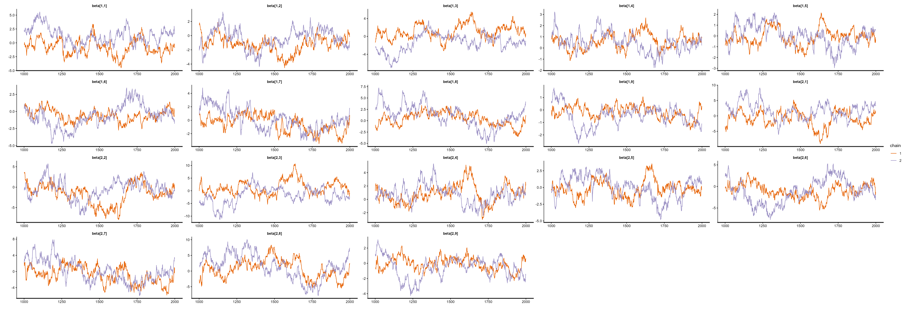
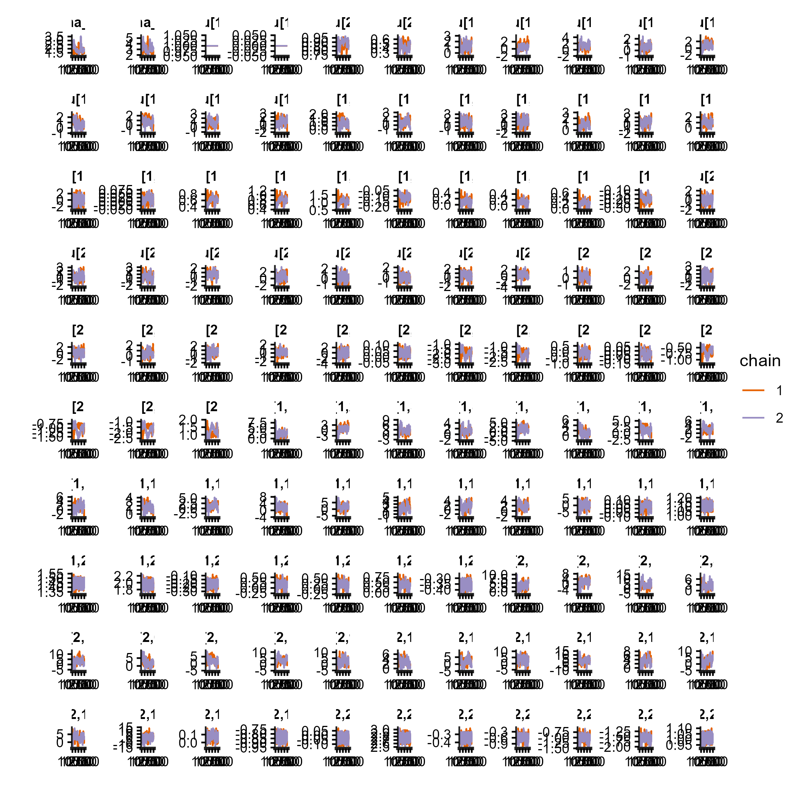
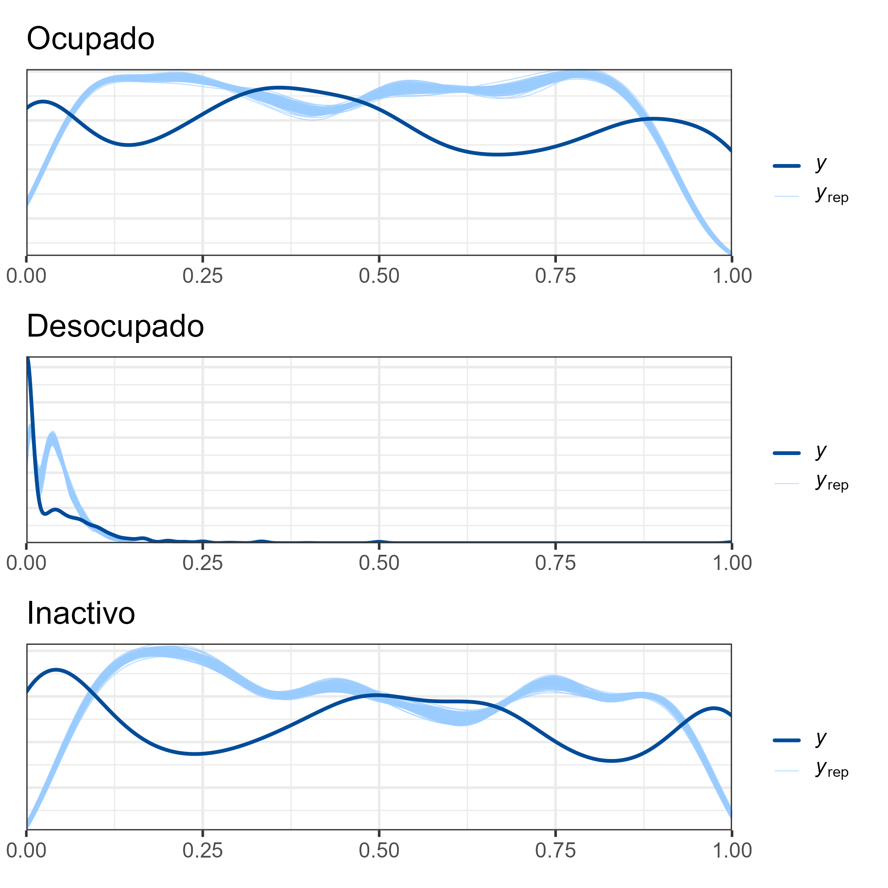

functions {
matrix pred_theta(matrix Xp, matrix Zp, int p, matrix beta, matrix u){
int D1 = rows(Xp);
real num1[D1, p];
real den1[D1];
matrix[D1,p] theta_p;
matrix[D1,p] tasa_pred;
for(d in 1:D1){
num1[d, 1] = 1;
num1[d, 2] = exp(Xp[d, ] * beta[1, ]' + Zp[d, ] * u[1, ]') ;
num1[d, 3] = exp(Xp[d, ] * beta[2, ]' + Zp[d, ] * u[2, ]') ;
den1[d] = sum(num1[d, ]);
}
for(d in 1:D1){
for(i in 2:p){
theta_p[d, i] = num1[d, i]/den1[d];
}
theta_p[d, 1] = 1/den1[d];
}
for(d in 1:D1){
tasa_pred[d, 1] = theta_p[d,1]/(theta_p[d,1] + theta_p[d,2]);// TD
tasa_pred[d, 2] = theta_p[d,2]; // TO
tasa_pred[d, 3] = tasa_pred[d, 2]/(1- tasa_pred[d, 1]); // TP
}
return tasa_pred ;
}
}Curso de Benchmarking para Modelos Bayesianos de Estimación en Áreas Pequeñas con Métodos MCMC
Modelo de unidad para Indicadores del Mercado del Trabajo
Andrés Gutierrez - Stalyn Guerrero
División de Estadísticas - CEPAL
Introducción (I)
En la inferencia Bayesiana para estimación de áreas pequeñas (SAE), los métodos de Monte Carlo por Cadenas de Markov (MCMC) permiten aproximar distribuciones posteriores complejas.
Estos métodos se emplean para modelos con:
- Estructura jerárquica.
- Supuestos de distribución no estándar.
- Estructura jerárquica.
La validez de los estimadores depende de la convergencia y eficiencia de las cadenas.
Indicadores del Mercado del Trabajo
Punto de partida: caracterizar la dinámica del mercado del trabajo.
Se emplean tres indicadores fundamentales:
- Tasa de Ocupación (TO)
- Tasa de Participación (TP)
- Tasa de Desempleo (TD)
1. Tasa de Ocupación (TO)
\[ TO = \frac{\text{Ocupados}}{\text{Población en Edad de Trabajar}} \times 100 \]
- Numerador: personas ocupadas (empleadas o ausentes temporalmente de un empleo).
- Denominador: población en edad de trabajar (PET, usualmente ≥ 15 años).
Interpretación: mide la capacidad de absorción del empleo en la población disponible.
2. Tasa de Participación (TP)
\[ TP = \frac{\text{Fuerza de Trabajo}}{\text{Población en Edad de Trabajar}} \times 100 \]
- Numerador: fuerza de trabajo = ocupados + desocupados.
- Denominador: población en edad de trabajar.
3. Tasa de Desempleo (TD)
\[ TD = \frac{\text{Desocupados}}{\text{Fuerza de Trabajo}} \times 100 \]
- Numerador: desocupados (personas sin empleo, disponibles y en búsqueda activa).
- Denominador: fuerza de trabajo.
Realción entre las tasas
Note que
\[ TP = \frac{TO}{1 - TD}, \]
Sea:
- \(PET\) = Población en Edad de Trabajar (denominador común).
- \(O\) = Ocupados.
- \(D\) = Desocupados.
- Fuerza de Trabajo: \(F = O + D\).
Indicadores:
\[ TO = \frac{O}{PET}, \\ \]
\[ TP = \frac{F}{PET} = \frac{O + D}{PET}, \\ \]
\[ TD = \frac{D}{F} = \frac{D}{O + D}. \]
Condiciones: \(PET>0,\; F>0\) (por tanto \(0 \le TD < 1\)).
Demostración (I)
- Partir de definiciones:
\[ TP = \frac{O + D}{PET} = \frac{O}{PET} + \frac{D}{PET} = TO + \frac{D}{PET}. \]
- Relacione \(\dfrac{D}{PET}\) con \(TD\) y \(TP\):
\[ \frac{D}{PET} = \frac{D}{O + D}\cdot\frac{O + D}{PET} = TD \cdot TP. \]
Demostración (II)
- Sustituya en la expresión de \(TP\):
\[ TP = TO + TD\cdot TP \quad\Rightarrow\quad TP - TD\cdot TP = TO \]
\[ TP(1 - TD) = TO \quad\Rightarrow\quad TP = \frac{TO}{1 - TD}. \]
Observaciones (I)
Es necesario \(TD<1\) (caso trivial: si \(TD=1\) entonces \(O=0\) y la TO = 0; la fórmula tiene sentido por continuidad).
En SAE: al usar estimadores para \(TO\) y \(TD\) (con varianza asociada), la relación implica que la varianza estimada de \(TP\) debe considerar la covarianza entre estimadores de \(TO\) y \(TD\).
Si \(\widehat{TP} = \widehat{TO}/(1-\widehat{TD})\), simulación posterior (MCMC) para obtener varianza/intervalos fiables.
Para benchmarking y consistencia entre niveles, la relación algebraica permite reexpresar totales y verificar coherencia entre estimaciones por dominio y agregadas.
Notación básica
Supongamos que cada unidad \(i\) pertenece a un dominio/postestrato \(d\) y que la condición de empleo tiene tres categorías:
- \(k = 1\): Desocupado
- \(k = 2\): Ocupado
- \(k = 3\): Inactivo
Definimos la variable de respuesta categórica a nivel de unidad:
\[ Y_{id} \in {1,2,3}. \]
En la práctica, los conteos agregados son una combinación (dominio/postestrato), es decir: \[ \mathbf{y}_d = \big(y_{d1},y_{d2},y_{d3}\big),\quad n_d = \sum_{k=1}^3 y_{dk}, \]
El modelo multinomial se define
\[ \mathbf{y}_d \mid \boldsymbol{\theta}_d \sim \text{Multinomial}\big(n_d, \boldsymbol{\theta}_d\big), \] donde \[ \boldsymbol{\theta}_{d} = \big(\theta_{d1},\theta_{d2},\theta_{d3}\big), \qquad \sum_{k=1}^3 \theta_{dk} = 1,\quad \theta_{dk} > 0. \]
Estructura multinomial logit con categoría de referencia
Tomamos la categoría \(k=1\) (Desocupado) como referencia. Para \(k = 2,3\), definimos los predictores lineales:
\[ \eta_{dk} = \mathbf{x}_d^\top \boldsymbol{\beta}_k + \mathbf{z}_d^\top \mathbf{u}_k, \qquad k = 2,3, \]
donde:
\(\mathbf{x}_d \in \mathbb{R}^K\) es el vector de covariables fijas,
\(\mathbf{z}_d \in \mathbb{R}^{K_z}\) es el vector de predictores,
\(\boldsymbol{\beta}_k \in \mathbb{R}^K\) es el vector de coeficientes fijos para la categoría \(k\),
\(\mathbf{u}_k \in \mathbb{R}^{K_z}\) es el vector de efectos aleatorios para la categoría (k).
Parametrización de \(\boldsymbol{\theta}\)
La parametrización multinomial logit con categoría base se escribe:
\[ \theta_{d1} = \frac{1}{1 + \exp(\eta_{d2}) + \exp(\eta_{d3})}, \]
\[ \theta_{d2} = \frac{\exp(\eta_{d2})}{1 + \exp(\eta_{d2}) + \exp(\eta_{d3})}, \]
\[ \theta_{d3} = \frac{\exp(\eta_{d3})}{1 + \exp(\eta_{d2}) + \exp(\eta_{d3})}. \]
Estructura jerárquica de efectos aleatorios y priors
Para cada categoría no base \(k = 2,3\) y cada componente \(j = 1,\dots,K_z\) del vector de efectos aleatorios, asumes:
\[ u_{kj} \sim \mathcal{N}(0, \sigma_k^2), \]
con varianzas a priori: \[ \sigma_k^2 \sim \text{Inv-Gamma}(0.0001,, 0.0001), \qquad k=2,3. \]
Los coeficientes fijos para cada categoría (k) tienen prior normal:
\[ \beta_{kl} \sim \mathcal{N}\big(0,, 100^2\big), \qquad l = 1,\dots,K. \]
El modelo estructura completa
En conjunto, el modelo completo para los conteos \(\mathbf{y}_d\) es:
\[ \mathbf{y}_d \mid \boldsymbol{\theta}_d \sim \text{Multinomial}\big(n_d,\boldsymbol{\theta}_d\big), \]
\[ \log\frac{\theta_{dk}}{\theta_{d1}} = \mathbf{x}_d^\top \boldsymbol{\beta}_k + \mathbf{z}_d^\top \mathbf{u}_k, \qquad k=2,3, \]
\[ u_{kj} \sim \mathcal{N}(0,\sigma_k^2),\quad \sigma_k^2 \sim \text{Inv-Gamma}(0.0001,0.0001),\quad \beta_{kl} \sim \mathcal{N}(0,100^2). \]
Predicción en el censo y tasas derivadas (TD, TO, TP)
Para cada unidad/postestrato del censo \(j=1,\dots,D_1\) con covariables \(\mathbf{x}_j^{(p)}\) y \(\mathbf{z}_j^{(p)}\), defines los predictores lineales:
\[ \eta_{jk}^{(p)} = \big(\mathbf{x}_j^{(p)}\big)^\top \boldsymbol{\beta}_k + \big(\mathbf{z}_j^{(p)}\big)^\top \mathbf{u}_k, \qquad k=2,3, \]
y las probabilidades predichas:
\[ \theta_{j1}^{(p)} = \frac{1}{1 + \exp\big(\eta_{j2}^{(p)}\big) + \exp\big(\eta_{j3}^{(p)}\big)}, \qquad \theta_{j2}^{(p)} = \frac{\exp\big(\eta_{j2}^{(p)}\big)}{1 + \exp\big(\eta_{j2}^{(p)}\big) + \exp\big(\eta_{j3}^{(p)}\big)}, \]
\[ \theta_{j3}^{(p)} = \frac{\exp\big(\eta_{j3}^{(p)}\big)}{1 + \exp\big(\eta_{j2}^{(p)}\big) + \exp\big(\eta_{j3}^{(p)}\big)}. \]
Denotando: \[ \theta_{j1}^{(p)} = \Pr(\text{Desocupado}),\quad \theta_{j2}^{(p)} = \Pr(\text{Ocupado}),\quad \theta_{j3}^{(p)} = \Pr(\text{Inactivo}), \]
Predicción en el censo y tasas derivadas (TD, TO, TP)
Ahora, puedes definir las tasas usuales de mercado laboral como:
- Tasa de desocupación (TD):
\[ \text{TD}_j = \frac{\theta_{j1}^{(p)}}{\theta_{j1}^{(p)} + \theta_{j2}^{(p)}}. \]
- Tasa de ocupación (TO):
\[ \text{TO}_j = \theta_{j2}^{(p)}. \]
- Tasa de participación (TP):
\[ \text{TP}_j = \frac{\text{TO}_j}{1 - \text{TD}_j}, \]
Modelo en Stan multinomia (pred_theta)
Función pred_theta
Modelo en Stan multinomia (data)
data
data {
int<lower=1> D; // número de postestrto
int<lower=1> D1; // número de dominios por predesir
int<lower=1> P; // categorías
int<lower=1> K; // cantidad de regresores
int<lower=1> Kz; // cantidad de regresores en Z
int y[D, P]; // matriz de datos
matrix[D, K] X; // matriz de covariables
matrix[D, Kz] Z; // matriz de covariables
matrix[D1, K] Xp; // matriz de covariables
matrix[D1, Kz] Zp; // matriz de covariables
}Modelo en Stan multinomia (parameters)
Modelo en Stan multinomia (transformed parameters)
transformed parameters
transformed parameters {
simplex[P] theta[D];// vector de parámetros;
real num[D, P];
real den[D];
// this transform random effects so that they have the correlation
// matrix specified by the correlation matrix above
matrix[P-1, Kz] u; // random effect matrix
u = diag_pre_multiply(sigma_u, L_u) * z_u;
for(d in 1:D){
num[d, 1] = 1;
num[d, 2] = exp(X[d, ] * beta[1, ]' + Z[d, ] * u[1, ]') ;
num[d, 3] = exp(X[d, ] * beta[2, ]' + Z[d, ] * u[2, ]') ;
den[d] = sum(num[d, ]);
}
for(d in 1:D){
for(p in 2:P){
theta[d, p] = num[d, p]/den[d];
}
theta[d, 1] = 1/den[d];
}
}Modelo en Stan multinomia (model)
Modelo en Stan multinomia (generated quantities)
Lectura bases de datos (Censo).
| dam | area | etnia | sexo | edad | anoest | n |
|---|---|---|---|---|---|---|
| 01 | 0 | 1 | 1 | 2 | 1 | 22 |
| 01 | 0 | 1 | 1 | 2 | 2 | 107 |
| 01 | 0 | 1 | 1 | 2 | 3 | 910 |
| 01 | 0 | 1 | 1 | 2 | 4 | 167 |
| 01 | 0 | 1 | 1 | 3 | 1 | 18 |
| 01 | 0 | 1 | 1 | 3 | 2 | 123 |
| 01 | 0 | 1 | 1 | 3 | 3 | 890 |
| 01 | 0 | 1 | 1 | 3 | 4 | 301 |
Lectura bases de datos (Encuesta).
| dam | nombre | upm | estrato | area | lp | li | ingreso | sexo | etnia | anoest | edad | fep | empleo |
|---|---|---|---|---|---|---|---|---|---|---|---|---|---|
| 01 | Tarapacá | 01100100001 | 011001 | 1 | 113958 | 51309 | 250001.0 | 2 | 1 | 3 | 4 | 39 | Ocupado |
| 01 | Tarapacá | 01100100001 | 011001 | 1 | 113958 | 51309 | 211092.0 | 2 | 3 | 3 | 2 | 39 | Ocupado |
| 01 | Tarapacá | 01100100001 | 011001 | 1 | 113958 | 51309 | 296751.0 | 1 | 3 | 3 | 2 | 39 | Ocupado |
| 01 | Tarapacá | 01100100001 | 011001 | 1 | 113958 | 51309 | 296751.0 | 1 | 3 | 3 | 2 | 39 | Ocupado |
| 01 | Tarapacá | 01100100001 | 011001 | 1 | 113958 | 51309 | 113890.0 | 1 | 3 | 4 | 2 | 39 | Ocupado |
| 01 | Tarapacá | 01100100001 | 011001 | 1 | 113958 | 51309 | 113890.0 | 2 | 3 | 4 | 2 | 39 | Inactivo |
| 01 | Tarapacá | 01100100001 | 011001 | 1 | 113958 | 51309 | 231667.5 | 2 | 3 | 3 | 4 | 39 | Ocupado |
| 01 | Tarapacá | 01100100001 | 011001 | 1 | 113958 | 51309 | 231667.5 | 2 | 3 | 3 | 3 | 39 | Desocupado |
Lectura de datos (Covariables)
| dam | luces_nocturnas | cubrimiento_rural | cubrimiento_urbano | modificacion_humana | accesibilidad_hospitales | accesibilidad_hosp_caminado | area1 | etnia2 | sexo2 | edad2 | edad3 | edad4 | edad5 | anoest2 | anoest3 | anoest4 | anoest99 | etnia1 | piso_tierra | material_paredes | material_techo | rezago_escolar | alfabeta | tasa_desocupacion |
|---|---|---|---|---|---|---|---|---|---|---|---|---|---|---|---|---|---|---|---|---|---|---|---|---|
| 05 | 1.3513 | -0.3822 | 0.5804 | -0.4326 | -0.4944 | -0.4654 | 0.7832 | -0.2641 | 0.9270 | 0.2367 | -0.9039 | 0.2803 | 1.3196 | -0.8303 | -0.4020 | 1.0839 | 0.5822 | -1.0400 | -0.6748 | 0.7849 | -0.1419 | 0.9427 | -0.8311 | -0.1746 |
| 12 | -0.7589 | -0.9654 | -0.5861 | 0.7200 | 3.0731 | 3.2312 | 0.8740 | -0.2792 | -1.2412 | -0.5137 | 1.0900 | 0.5338 | 0.2594 | -0.8988 | 0.7717 | 1.2775 | -1.2498 | 0.5113 | -0.8387 | -0.2118 | 0.6301 | 0.9791 | -1.0626 | -2.1478 |
| 11 | -1.0907 | -0.5922 | -0.8519 | -0.0992 | 1.6882 | 1.4095 | -0.3737 | -0.2816 | -1.8908 | -1.1800 | 1.4718 | -0.2121 | -1.1564 | 0.4736 | -0.3127 | -0.4177 | -1.1151 | 1.0405 | -0.7303 | 0.6679 | 1.0483 | -0.2585 | 0.6878 | -1.8449 |
| 10 | -0.1036 | 0.9024 | 0.1529 | 0.7645 | -0.1906 | -0.2802 | -0.9786 | -0.2912 | 0.1854 | -0.6294 | 0.2357 | 0.3076 | 0.0288 | 1.2668 | -0.2375 | -0.9033 | -0.0175 | 0.9851 | -0.8347 | 0.6664 | 0.8325 | -0.8919 | 0.8221 | -0.6736 |
| 15 | -1.0578 | -0.9477 | -1.0118 | -1.7838 | -0.4838 | -0.4509 | 0.8502 | 3.7408 | -0.1316 | 1.1047 | -0.0696 | -1.4474 | -0.1526 | -0.9770 | 0.7665 | 0.3527 | 1.1942 | 1.4901 | 2.3843 | -0.6070 | -1.8553 | 0.5846 | -0.8017 | 0.2468 |
Compilar modelo de Stan en R
Código de R
source("../Recurso/Modelo_unidad/funciones/modelo_empleo.R")
library(magrittr)
library(fastDummies)
encuesta_sta_MT %<>% dummy_cols(select_columns = "empleo")
multi_fit <- modelo_empleo(
encuesta_sta = encuesta_sta_MT,
censo_sta = censo_mrp,
predictors = statelevel_predictors,
X_fijo = "luces_nocturnas + cubrimiento_rural + cubrimiento_urbano + modificacion_humana + material_paredes + material_techo + rezago_escolar + alfabeta +tasa_desocupacion",
Z_aleatorio = "dam + etnia + edad + area + anoest + sexo",
fit_STAN = "../Recurso/Modelo_unidad/Multinivel_multinomial_no_cor.stan",
path_model = "../Recurso/Modelo_unidad/Multinivel_multinomial_model_no_cor.rds"
)Compilar modelo de Stan en R
Código de R
source("../Recurso/Modelo_unidad/funciones/validar_modelo_bayes.R")
source("../Recurso/Modelo_unidad/funciones/Plot_dens_draws.R")
encuesta_sta_MT %<>% fastDummies::dummy_cols(select_columns = "empleo")
multi_fit <- readRDS("../Recurso/Modelo_unidad/Multinivel_multinomial_model_no_cor.rds")
resul_validar_modelo <-
validar_modelo_bayes(model_bayes = multi_fit$model_bayes,
encuesta_sta = encuesta_sta_MT)
saveRDS(resul_validar_modelo, file = "../Recurso/Modelo_unidad/resul_validar_modelo_no_cor2.rds")Resultados del modelo, r-hat
Código de R
| description | n | Porcen |
|---|---|---|
| hat(R) <= 1.05 | 5340 | 98.7791 |
| hat(R) <= 1.1 | 23 | 0.4255 |
| hat(R) > 1.1 | 43 | 0.7954 |
Resultados del modelo, efectos fijos.

Resultados del modelo, efectos aleatorios

Resultados del modelo, PPC

Estimación del Tasa de ocupación, desocupación e participación
| TD | TO | TP |
|---|---|---|
| 0.0943 | 0.5432 | 0.5952 |
Estimación del pobreza por sexo
| sexo | TD | TO | TP |
|---|---|---|---|
| 1 | 0.0815 | 0.6692 | 0.7266 |
| 2 | 0.1055 | 0.4334 | 0.4807 |
Estimación del pobreza por dam
| dam | TD | TO | TP |
|---|---|---|---|
| 01 | 0.0843 | 0.5865 | 0.6345 |
| 02 | 0.0994 | 0.5635 | 0.6184 |
| 03 | 0.1031 | 0.5263 | 0.5812 |
| 04 | 0.1266 | 0.4700 | 0.5329 |
| 05 | 0.1036 | 0.5157 | 0.5716 |
| 06 | 0.0780 | 0.5264 | 0.5675 |
| 07 | 0.0748 | 0.5141 | 0.5525 |
| 08 | 0.1270 | 0.4694 | 0.5327 |
¡Gracias!